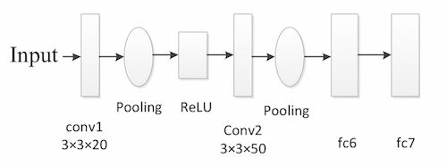

Undergraduate Research Projects [back]
Graduation Thesis
“Saliency Detection based on GANs”
-Advised by Prof.Zhang
Generate Adversarial Networks (GANs) have a very good potential to handle the end-to-end problems and saliency detection is exactly one of them. Thus this project aims at upgrading my former method by using deep learning way to segment the saliency area from a 3D video sequence. This is also the topic of my graduation thesis, supervised by Prof. Ping Zhang.
Saliency Detection based on Multi Scale and Graphical Model
-Advised by Prof.Zhang
In this paper, we propose an unsupervised salient object detection method in 3D videos. Both temporal and depth information are efficiently considered, and multi-scale architecture and graph-based refinement are built to improve accuracy and robustness. Firstly, the input video frame is segmented into non-overlapping superpixels by combining both appearance and depth information at the input. A multi-scale architecture is also deployed after the segmentation with different segmentation parameters. Secondly, the initial saliency score of each segmented superpixel in each scale is calculated via global contrast which is defined by appearance, depth, and motion cues from two consecutive frames. Thirdly, the initial saliency in each scale is refined by smoothing over graphs built by three spatial-temporal feature priors-color, depth and motion. Finally, the result is obtained by fusing three refined saliency maps in three scales. The experiments on two widely-used datasets illustrate that our method outperforms state-of-the-art algorithms in terms of accuracy, robustness, and reliability.
Infrared Weak Target Detection based on CNN
Funded Engineering Project – Advised by Prof.Zhang
 Since the target is small and infrared, the feature of the target is very weak, which caused the great difficulty to recoginize the object. Thus a Convolutional Neural Networks was designed to utilize the limited feature with a high efficiency.